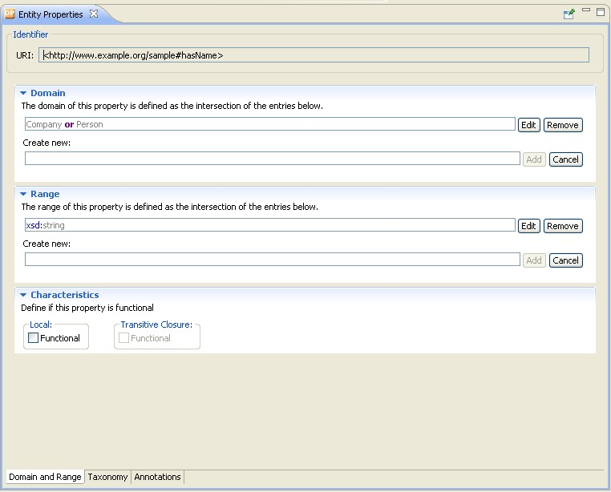

Datatype properties relate individuals to RDF literals or simple types defined in accordance with XML Schema datatypes. For example, the datatype property hasName might link individuals from the class Person to the XML Schema datatype xsd:string.
Characteristics of datatype properties can be configured on the following tabs in the Entity Properties panel:
For instructions on how to create a datatype property, see Create a Datatype Property.
Online References
Further information is available at the following Web sites:
The notions domain and range have meanings inspired by the mathematical uses of these terms. In mathematics, they are used to refer to how a function can be used. The domain of a function is the set of values for which it is defined, while the range is the set of values it can take. Similarly in OWL, if you specify a class D as the domain of the datatype property P and xsd:string as the range of P, the informal interpretation of this is that the property P relates values from the class D to values from the XML Schema datatype xsd:string.
In addition to simple classes you can also enter complex classes in the domain text box using the Manchester Syntax. Note that selecting multiple domains means that the domain of the property is the intersection of the classes.
Just as object properties, datatype properties can be declared as "functional". For this purpose, OWL defines the built-in class owl:FunctionalProperty. A functional property is a property that can have only one (unique) value y for each instance x, that is, there cannot be two distinct values y1 and y2 such that the pairs (x,y1) and (x,y2) are both instances of this property.
The Characteristics section contains two "Functional" check boxes. The left one is changeable and represents the assertions of the current ontology. The one on the right hand side, labeled transitive closure, cannot be changed and represents also assertions that come from imported ontologies.

On this tab you can specify the characteristics of the datatype property regarding its hierarchy. This includes the following settings:
Usually, annotations are used to add information to resources of the ontology. They contain useful information such as who is the creator or what are the readable labels and comments for single elements of the ontology.
For information on how to create an annotation, see Create an Annotation.